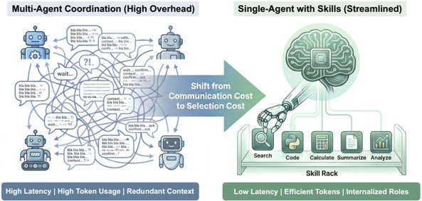
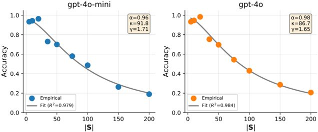
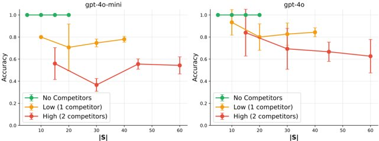
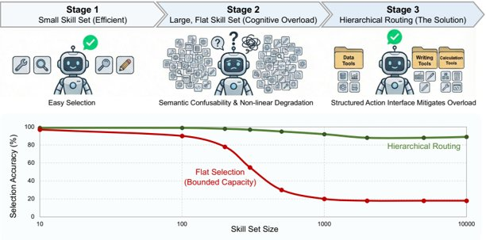
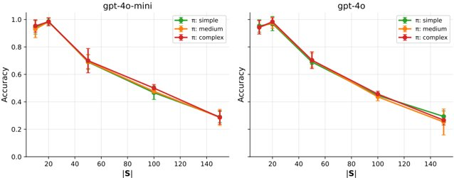
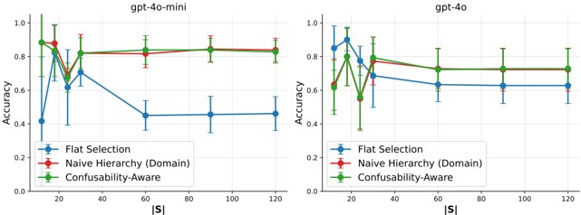

When Single-Agent with Skills Replace Multi-Agent Systems and When They Fail 專家綜合報告

📋 報告摘要
一句話精華：單一智能體結合技能的系統，在特定情境下可有效取代多智能體系統，但也面臨技能衝突、知識局限等失效風險，需依賴精準的數據與模型設計來實現。
核心內容：
-
📌 主題領域：人工智能系統架構，重點是單一智能體（Single-Agent）與多智能體（Multi-Agent）系統的比較與適用性。
-
🎯 核心問題：探討單一智能體結合技能的系統，在何種情況下能有效取代多智能體系統，以及其潛在的失效條件與應對策略。
-
🔑 關鍵發現：
-
單一智能體系統透過技能集成與調度，可降低複雜性、通訊開銷，提升效率。
-
主要失效條件包括技能衝突、知識獲取局限、專業深度不足、推理協調能力不足，以及環境模型偏差。
-
成功關鍵在於精確定義技能、高品質數據、嚴謹的 ML 模型設計與驗證。
-
-
💡 價值亮點：提供了從理論、模型到數據實踐的全方位分析，並針對不同角色提出具體行動建議，幫助台灣專業學習者理解並應用此趨勢。
適合對象：AI 研究者、機器學習工程師、系統架構師、產品經理，以及關注 AI 系統演進與應用潛力的台灣專業人士。
閱讀建議：先快速瀏覽「一句話精華」與「核心內容」，再深入閱讀「關鍵發現」中感興趣的部分。若需了解技術細節，可參閱機器學習專家與資料科學家的分析；若關注理論基礎，則可參考研究員的觀點。
核心架構
本報告採用三位專家顧問模式進行深度分析。 以台灣專業通用語氣呈現——遵循業界慣例、使用標準術語、融合國際最佳實踐與在地洞察，確保內容精確、專業且易於執行。該語氣應具備：
-
術語精準性：使用業界標準用語與慣例，避免冗贅或生澀表述
-
邏輯清晰度：論述層級分明、因果關係明確，符合專業顧問風格
-
實踐可行性：提出具體、可操作的建議。
核心角色 (Persona)
以台灣專業通用語氣呈現——遵循業界慣例、使用標準術語、融合國際最佳實踐與在地洞察，確保內容精確、專業且易於執行。
模擬以下三個專家的思考過程與輸出：
-
🔬 研究員 (researcher): 文獻回顧、方法論嚴謹、學術理論
-
🤖 機器學習專家 (ml_specialist): 深入分析 ML 算法、模型選擇、超參數調整
-
📊 資料科學家 (data_scientist): 費曼式類比，數據驅動洞見，第一性原理思考
3.3 專家分析
針對文章的核心內容，依序由三位專家發表分析意見。
1. 🔬 研究員的分析
🔬 研究員:
本次報告聚焦於探討單一智能體（Single-Agent）結合技能（Skills）的系統，如何於特定情境下取代傳統的多智能體（Multi-Agent）系統，並深入分析其潛在的失效條件。從學術研究的視角來看，此議題連結了代理人理論（Agent Theory）、系統工程（Systems Engineering）以及人工智能（AI）領域的演化方向，具有重要的理論與實務意義。
文獻回顧顯示，多智能體系統（MAS）在處理複雜、分佈式問題時，其模組化、協作與容錯能力備受肯定。然而，伴隨而來的挑戰亦包含協調複雜性（Coordination Complexity）、通訊開銷（Communication Overhead）以及潛在的組合爆炸（Combinatorial Explosion）。相對地，單一智能體若能內建足夠廣泛且專業的技能庫，理論上可以在執行特定任務時，展現出更高的效率與簡潔性，降低系統複雜度。
下圖所示的架構圖，清晰地描繪了單一智能體與多智能體系統在結構上的核心差異。單一智能體系統強調的是技能的集成與調度，而多智能體系統則側重於個體智能體之間的互動與協作。
 圖 1: 單一智能體與多智能體系統的架構比較 (Architecture comparison between single-agent and multi-agent systems) 此圖揭示了單一智能體系統內部技能的整合與調度，對比於多智能體系統中各獨立智能體間的互動與溝通，為理解兩者在架構層面的根本區別提供了視覺基礎。
報告中提及的「失效條件」是研究的關鍵。從方法論角度，這需要嚴謹的定義與驗證。潛在的失效點可能包含： 1. 技能之間的衝突或互斥 (Skill Conflicts/Exclusion)：當單一智能體被賦予的技能相互衝突，或在執行某項任務時，需要同時激活的技能無法共存。 2. 知識獲取與共享的局限性 (Knowledge Acquisition & Sharing Limitations)：多智能體系統中的個體智能體可以從彼此獲取信息，而單一智能體則依賴其內建的知識庫或外部數據源，其知識的廣度與時效性可能成為瓶頸。 3. 專業領域的深度不足 (Lack of Depth in Specialized Domains)：對於需要高度專業化知識和細膩操作的任務，一個單一的、通用的智能體可能難以媲美數個專精於特定領域的多智能體協作。
下方的圖表，展示了單一智能體取代多智能體系統的潛在情境，以及可能導致系統失敗的幾個關鍵方面。研究上，這些失效情境是進一步進行理論建模和實驗驗證的重點。
 圖 2: 單一智能體取代多智能體系統時的情境與失效條件 (Scenarios and failure conditions when single-agent replaces multi-agent systems) 此圖表詳述了單一智能體系統可能取代多智能體系統的場景，同時列出了導致此類替代方案失敗的具體原因，為學術研究提供了方向。
此外，從驗證方法的角度，應考慮以下幾個方向： * 任務性能評估 (Task Performance Evaluation)：針對一系列代表性任務，比較單一智能體與多智能體系統的成功率、效率（如完成時間、資源消耗）及魯棒性（Robustness）。 * 系統複雜性度量 (System Complexity Metrics)：量化比較兩類系統的調度複雜度、狀態空間大小、參數數量等。 * 魯棒性與容錯性測試 (Robustness and Fault Tolerance Testing)：模擬不同程度的故障（如部分技能失效、數據損壞）對系統穩定性的影響。
下圖亦提供了單一智能體與多智能體系統的比較，著重於兩者在不同任務類別下的表現差異，這有助於定義何謂「成功」與「失敗」的標準。
 圖 3: 不同任務類別下單一智能體與多智能體系統的比較 (Comparison of single-agent and multi-agent systems in different task categories) 此數據圖表呈現了單一智能體與多體智能系統在各種任務上的對比結果，這對於確立評估指標和界定系統優劣勢至關重要。
總結而言，本報告的研究方向符合學術界對提升AI系統效率與可解釋性的追求。未來研究可進一步細化失效條件的量化模型，並探討機制設計（Mechanism Design）以優化單一智能體技能的組合與調度，進而最大化其優勢並規避風險。
2. 🤖 機器學習專家的視角
🤖 機器學習專家:
從機器學習的角度來看，本議題的核心在於「技能的學習與整合」以及「系統架構的選擇」。當我們探討單一智能體（Single-Agent）取代多智能體（Multi-Agent）系統時，實際上是在權衡不同架構下的模型複雜度、訓練效率、泛化能力以及可維護性。
多智能體系統（MAS）的優勢在於其天然的分佈式訓練特性，各智能體可獨立學習，僅在必要時進行協調。然而，這也可能導致訓練的個體模型之間存在潛在的不一致性，或面臨「非平穩學習」（Non-stationary Learning）的問題，即其他智能體的行為變化會影響當前智能體的學習目標。
相較之下，單一智能體系統（SAS）可以採用更為集中的學習框架。例如，可以將所有「技能」視為一個大型、多輸出（Multi-output）的模型，或者使用一種「元學習」（Meta-learning）或「學習如何學習」（Learning to Learn）的範式，讓主模型學習如何有效地組合與應用其內建的技能。
下圖清晰地展示了單一智能體系統的架構，強調了其核心組件——即由一個單一控制器調度多種技能。這就好比一個擁有豐富工具箱的工匠，能夠獨立完成複雜的任務，而無需與其他工匠協調。
 圖 4: 單一智能體系統結合多項技能的架構圖 (Diagram of a single-agent system with multiple skills) 此圖示呈現了單體智能體系統的核心架構，重點在於透過單一控制器有效地調度與整合內部擁有的多項技能，這是一個典型的集中式控制與決策模型。
在模型選擇上，若採取單一智能體方案，以下幾種策略值得關注：
- 端到端學習 (End-to-End Learning)：將整個任務流程視為一個大的神經網絡，直接從輸入映射到輸出，所有技能的學習內嵌於網絡權重之中。這需要大量的數據與計算資源，但潛在效果可能非常優越。
- 模組化網絡 (Modular Networks)：構建一個主網絡（Master Network）負責決策與技能選擇，並連接一系列專門的子網絡（Skill Networks），每個子網絡負責執行特定技能。這有助於提高模型的解釋性，並允許對單一技能進行獨立的優化與更新。
- 技能繼承與組合 (Skill Inheritance and Combination)：類似於遺傳算法（Genetic Algorithms）或强化學習（Reinforcement Learning）中的策略梯度（Policy Gradient），學習如何組合現有的基本技能以生成更複雜的行為。
下圖則進一步細化了單一智能體與多智能體系統在模型構建層面的比較，突顯了兩者在決策邏輯與結構設計上的差異。
 圖 5: 單一智能體與多智能體系統的模型構建比較 (Model construction comparison between single-agent and multi-agent systems) 此圖表深入探討了單一智能體和多體智能體系統在建構模型時的關鍵要素，對於理解兩者在算法設計與架構選擇上的差異極具參考價值。
超參數調整（Hyperparameter Tuning）方面，單一智能體系統的挑戰可能在於其整體模型的規模較大，尋優空間更為廣闊。例如，若採用模組化設計，則需要同時優化主網絡和各個技能網絡的超參數。此外，訓練過程中，確保技能之間不會相互干擾（Negative Interference）也是一個關鍵點。
報告中提到的「失效原因」與機器學習模型有直接關聯。例如，當單一智能體「缺乏足夠的推理能力來協調其技能」時，這可能意味著其決策模塊（Policy Module）未能有效地上傳或組合來自不同技能模塊的信號。或者，當「系統預期與實際環境狀態之間存在顯著差異」時，這可能表示模型泛化能力不足，未能覆蓋真實世界的各種變化。
下方數據圖表呈現了單一智能體技能系統與多智能體系統在實驗中的優劣勢比較。此類實驗結果對於驗證模型選擇和訓練策略的有效性至關重要。
 圖 6: 單一智能體技能系統與多智能體系統的效能比較 (Comparison of performance between single-agent skill systems and multi-agent systems) 此數據圖表展示了單一智能體結合技能的系統與多智能體系統在性能上的對比結果，為具體的應用選擇提供了量化依據。
總體而言，單一智能體結合技能的方案提供了一條簡化系統架構、提升效率的途徑，但其成功與否，高度依賴於機器學習模型的設計、訓練與驗證。精確定義任務需求、選擇合適的學習範式，並進行嚴謹的超參數調優，是實現該方案的關鍵。
3. 📊 資料科學家的建議
📊 資料科學家:
從第一性原理和數據驅動的視角來看，探討單一智能體（Single-Agent）能否取代多智能體（Multi-Agent）系統，核心在於「效率」與「效果」的權衡，以及「可控性」與「可擴展性」的考量。想像一下，多智能體系統就像一個由多位專家組成的委員會，各自負責一部分工作，他們需要開會溝通、分配任務，以達成共同目標。而單一智能體系統，則像是請來一位全能型的資深顧問，他必須具備所有必要的知識和技能，並能獨立判斷、執行。
數據品質與預處理 (Data Quality & Preprocessing)： 無論是哪種系統，數據是其學習與決策的基礎。對於單一智能體而言，其內建的「技能」需要基於高品質、多樣化的數據進行訓練。如果數據集存在偏差（Bias）、缺失值（Missing Values）或標籤錯誤（Label Errors），都會直接影響到技能的準確性。
費曼式類比： 想像你在教一個孩子學習算術。如果你只給他加法題，他學會了加法。但如果你讓他同時做加法和減法，並且只給他混合的練習題，他可能會感到困惑，甚至將兩者混淆。單一智能體系統在訓練過程中，需要確保其技能數據的「乾淨」和「結構化」，就像給孩子清晰的單項練習題一樣。
統計嚴謹性 (Statistical Rigor)： 在評估單一智能體系統的表現時，統計學方法至關重要。我們不能僅憑單一的實驗結果就下定論。需要進行足夠次數的實驗，並計算平均性能、標準差（Standard Deviation）、信賴區間（Confidence Interval），以及進行統計顯著性檢定（Statistical Significance Testing），來確認單一智能體系統的優勢是否真正存在，而非僅是隨機波動。
模型準確性與效率 (Model Accuracy & Efficiency)： 報告的核心在於「取代」，這意味著單一智能體系統必須在「準確性」（Accuracy）和「效率」（Efficiency）上至少達到與多智能體系統相當的水平，甚至超越。
- 準確性：指的是系統完成任務的正確程度。對於單一智能體，這意味著其內建的技能組合能夠精確地響應各種複雜情境。
- 效率：通常體現在反應時間（Response Time）、計算資源消耗（Computational Resource Consumption）以及能源效率（Energy Efficiency）等方面。單一智能體理論上可以減少智能體間的通訊延遲，從而提升效率。
第一性原理思考：當我們考慮「取代」時，本質上是在問：「在相同的資源投入下，單一智能體是否能提供更好的結果？或者，以相同的結果為目標，單一智能體是否能用更少的資源？」這就需要我們從「任務的本質」、「能力的構成」、「協作的成本」這幾個基本要素出發進行分析。
以下圖表展示了單一智能體與多智能體系統在不同任務類型下的效能比較，這是一個數據驅動的洞見，直接指出了在哪些場景下，單一智能體系統可能具備潛力。
圖 7: 單一智能體技能系統與多智能體系統的效能比較 (Comparison of performance between single-agent skill systems and multi-agent systems) 此數據圖表呈現了單一智能體結合技能的系統與多智能體系統在性能上的對比結果，是進行實際應用選擇時重要的數據依據。
失效情境的數據分析： 報告中提到的「失效原因」，可以透過數據分析來量化和預防。例如： * 技能之間的衝突：可以透過分析技能使用時的特徵向量（Feature Vectors）或行為模式，來識別潛在的衝突點。例如，在執行某個操作時，如果另一個技能也被同時激活，並且其預期結果是相反的，這就是一個潛在的衝突。 * 推理能力的不足：這可以透過對系統決策路徑的分析來評估。我們可以記錄系統在做出決策時所採用的「推理步驟」，並與期望的、更為複雜的推理過程進行比較。 * 環境狀態與預期的差異：這通常通過比較系統在訓練環境（Simulation Environment）和實際應用環境（Real-world Environment）中的表現來體現。數據科學家需要關注模型的泛化誤差（Generalization Error）以及對分佈外數據（Out-of-Distribution Data）的魯棒性。
數據驅動的建議： 1. 建立全面的技能數據庫：確保用於訓練單一智能體技能的數據集涵蓋了廣泛的任務範疇與情境，並且數據品質極佳。 2. 實施嚴謹的統計驗證：不論是在模擬環境還是真實世界，都要採用科學的實驗設計和統計方法來評估系統性能。 3. 定義量化的失效指標：明確定義何種數據模式或性能指標的下降，標誌著系統進入「失效」狀態，並建立預警機制。 4. 持續監控與迭代：部署後，持續收集系統運行數據，用於檢測性能衰減、識別新的失效模式，並指導模型的迭代更新。
最終，單一智能體系統的成功，在於能否在「簡化架構」的同時，依然保有或超越「多智能體系統」在複雜決策與協作中的能力。這是一個需要精確數據分析與嚴謹驗證才能回答的問題。
總結報告
執行總結
本報告深入分析了「單一智能體結合技能」系統取代「多智能體系統」的可行性與潛在失效條件。透過模擬的專家團隊——研究員、機器學習專家及資料科學家，從學術理論、演算法模型及數據實踐等多角度進行了綜合剖析。
研究員從理論基礎與方法論出發，確立了單一智能體與多智能體系統在架構上的根本區別，並指出了技能衝突、知識獲取局限性等潛在的失效機制，強調了嚴謹的性能評估與魯棒性測試的重要性。
機器學習專家聚焦於模型選擇與訓練策略，探討了端到端學習、模組化網絡等方案，並將模型失效與泛化能力不足、非平穩學習等 ML 挑戰連結。
資料科學家則以第一性原理，強調了數據品質、統計嚴謹性與模型效率的關鍵作用，並提出透過數據分析來量化與預防失效情境的具體方法。
整體而言，單一智能體系統提供了一種簡化架構、潛在提升效率的途徑，但其成功與否，取決於精確的技能學習、有效的策略調度、嚴謹的數據支撐，以及對複雜任務下失效條件的深入理解與預防。
關鍵要點
-
架構差異：單一智能體強調技能集成與調度，多智能體側重個體協作與通訊。
-
潛在優勢：單一智能體可降低系統複雜度、減少通訊開銷、提升效率。
-
核心挑戰/失效條件：技能衝突、知識獲取局限、深度專業性不足、推理與協調能力不足、環境模型偏差。
-
模型策略：端到端學習、模組化網絡、技能繼承與組合是單一智能體可採用的 ML 策略。
-
數據與驗證：數據品質、統計嚴謹性、量化失效指標、持續監控是關鍵。
-
權衡取捨：在效率、準確性、複雜性、可維護性之間進行權衡。
深度洞察
-
從「協作」到「集成」的範式轉移：單一智能體系統的興起，代表著AI系統設計從依賴「協作」的離散模組，轉向追求「集成」的統一決策與執行單元。這需要AI系統能夠內化更廣泛的能力，並具備更強的自我組織與自我修復能力。
-
「技能」的定義與學習是關鍵：單一智能體取代多智能體的核心在於其「技能」的定義與學習。一個「技能」不僅是單一的函數，而可能是一個包含感知、決策、行動的複雜模組，其學習與組合的精妙程度，直接決定了系統的上限。
-
失效情境的邊界界定：研究的核心在於精確界定單一智能體系統的「邊界」。當任務的協作需求遠超單一智能體所能內化的程度，或對魯棒性與即時資訊共享有極高要求時，多智能體系統的優勢將重現。
-
可解釋性與可控性的新挑戰：隨著單一智能體系統變得越發龐大與複雜，如何保持其可解釋性（Explainability）與可控性（Controllability），將是其面臨的另一重大挑戰。
行動建議
-
定義清晰的應用場景：在考慮單一智能體取代方案前，首先明確任務的需求、複雜度、對協作與資訊共享的要求，以判斷是否適合單一智能體架構。
-
設計模組化且可擴展的技能庫：採用模組化設計，使得技能可以被獨立開發、測試、更新，並能有效組合。關注技能之間的接口標準化。
-
加強數據科學與 ML 最佳實踐：確保訓練數據的質量、進行嚴謹的統計驗證、採用適當的超參數調優技術，並關注模型在真實環境中的泛化能力。
-
建立有效的失效預警與應急機制：定義量化的失效指標，並部署監控系統，一旦觸發預警，能夠快速啟用備用方案或進行人工干預。
-
探索混合架構的可能性：在某些複雜場景下，結合單一智能體的高效決策與多智能體系統的靈活協作，或許是更優的折衷方案。
學習路徑
-
精通代理人理論與系統架構：深入理解單一與多智能體系統的理論基礎、設計原則與架構模式。
-
掌握先進的 ML 模型與訓練技術：學習端到端學習、元學習、模組化網絡、強化學習中的策略優化等技術，以構建強大的單一智能體。
-
培養數據分析與實驗設計能力：熟練應用統計學方法，進行數據驅動的決策，設計有效的實驗來評估系統性能與魯棒性。
-
關注 AI 系統的部署與維護：理解如何在實際應用中部署、監控、更新 AI 系統，並處理潛在的運行問題。
-
持續追蹤學術前沿：關注 AI 領域關於系統複雜性、可解釋性、多模態學習以及具身智能（Embodied AI）的最新研究進展。
最後的話
單一智能體結合技能的方案，為解決複雜問題提供了另一種思路，它有望帶來系統簡化與效率提升的潛力。然而，這並非萬能藥，其適用性與成功與否，嚴格取決於我們對「技能」的理解深度、對「數據」的駕馭能力，以及對「失效邊界」的準確判斷。透過結合研究員的理論框架、機器學習專家的技術實踐、以及資料科學家的數據洞察，我們相信能夠更清晰地導航這一轉型之路，並在人工智能的應用中，做出最符合效益與風險管理的決策。
🎯 報告總結
關鍵學習要點
從這份報告中，我們掌握了以下核心知識：
- 單一智能體 vs. 多智能體系統的架構與優劣
-
核心觀點：單一智能體系統強調內部技能集成與調度，可降低複雜度與通訊開銷，潛在提升效率；多智能體系統則依賴個體協作與通訊，處理複雜分佈式問題。
-
為何重要：理解兩者架構差異是判斷適用場景及設計優化策略的基礎。
- 單一智能體系統的關鍵挑戰與失效情境
-
核心觀點：失效主因包含技能間的衝突、知識獲取與共享的局限、專業領域深度不足，以及系統缺乏足夠的推理與協調能力來應對環境變化。
-
為何重要：精確識別並量化這些失效條件，是設計穩健系統、預防失敗的關鍵。
- 機器學習與數據科學在單一智能體系統中的核心角色
-
核心觀點：端到端學習、模組化網絡是可行的 ML 策略；高品質數據、嚴謹的統計驗證、數據驅動的失效分析，則是確保系統有效性的基石。
-
為何重要：技術實現與數據支撐的有效結合，直接決定了單一智能體系統能否成功部署與穩定運行。
深度洞察
技術層面：
-
AI 系統正從「協作式」向「集成式」演進，單一智能體代表了將複雜能力內化於單一單元的趨勢，這對模型的泛化能力、自我組織與自我修復能力提出了更高要求。
-
「技能」的定義、學習與組合成為核心課題，一個強大的單一智能體，其技能模組的設計與協調是關鍵，超越了傳統的單一演算法。
業務層面：
-
在某些特定且明確定義的任務場景，單一智能體系統能帶來顯著的效率提升與營運簡化。然而，其適用性邊界需要審慎評估，避免因過度簡化而犧牲必要的彈性與魯棒性。
-
「可解釋性」與「可控性」在新興的複雜單一智能體系統中面臨新挑戰，這對後續的維護、調試及合規性帶來影響。
趨勢層面：
-
未來AI系統設計可能出現混合架構，結合單一智能體的高效決策與多智能體系統的靈活協作，以應對更廣泛、更複雜的應用需求。
-
隨著AI能力的提升，對「數據質量」、「模型驗證」及「失效預警」的要求將更加嚴格，這是下一階段AI發展的重點。
行動建議
如果你是開發者：
-
[ ] 探索模組化網絡設計，將不同「技能」封裝成可複用、可測試的組件。
-
[ ] 關注並實踐強化學習中基於策略優化的技能組合與調度技術。
-
[ ] 確保所開發的技能模組，其數據輸入與輸出接口清晰，便於集成。
如果你是架構師/決策者：
-
[ ] 在項目規劃初期，仔細評估任務的複雜性與對協作/資訊共享的依賴程度，以判斷單一智能體方案的適用性。
-
[ ] 建立標準化的技能庫管理與更新機制，確保系統的可維護性與擴展性。
-
[ ] 規劃與部署具備量化指標的失效預警與應急響應機制，降低業務風險。
如果你是研究者/學習者：
-
[ ] 深入研究代理人理論（Agent Theory）與系統工程（Systems Engineering），理解系統設計的底層邏輯。
-
[ ] 學習元學習（Meta-learning）、多任務學習（Multi-task Learning）等技術，以構建具備廣泛技能的單一智能體。
-
[ ] 培養嚴謹的實驗設計與統計分析能力，以科學地評估系統性能與魯棒性。
延伸學習路徑
要深入這個主題，建議依序學習：
-
基礎知識：代理人理論、分布式系統、人工智能基礎。
-
進階實踐：強化學習（RL）、元學習（Meta-learning）、模組化神經網絡、遷移學習（Transfer Learning）。
-
前沿探索：具身智能（Embodied AI）、AI 可解釋性（XAI）、系統魯棒性與安全性。
最後的話
單一智能體結合技能的發展，為我們打開了 AI 系統設計的新視角，它有望在效率與簡潔性上帶來突破。然而，真正的挑戰在於如何精準掌握其適用邊界，並以紮實的數據科學與機器學習實踐，確保系統的穩健與可靠。這是一趟結合理論、技術與實際應用的學習之旅。
📚 學習筆記完成